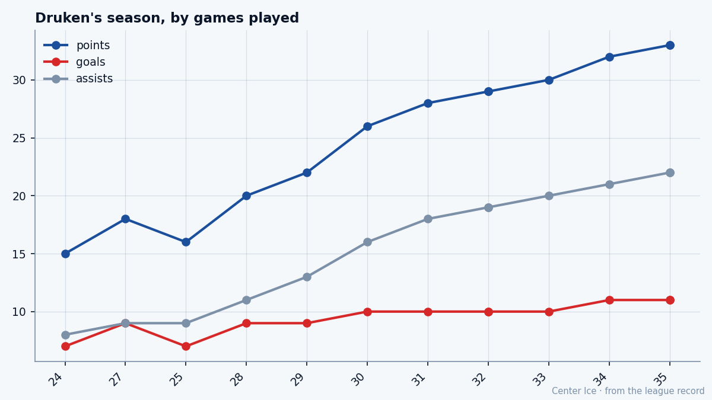
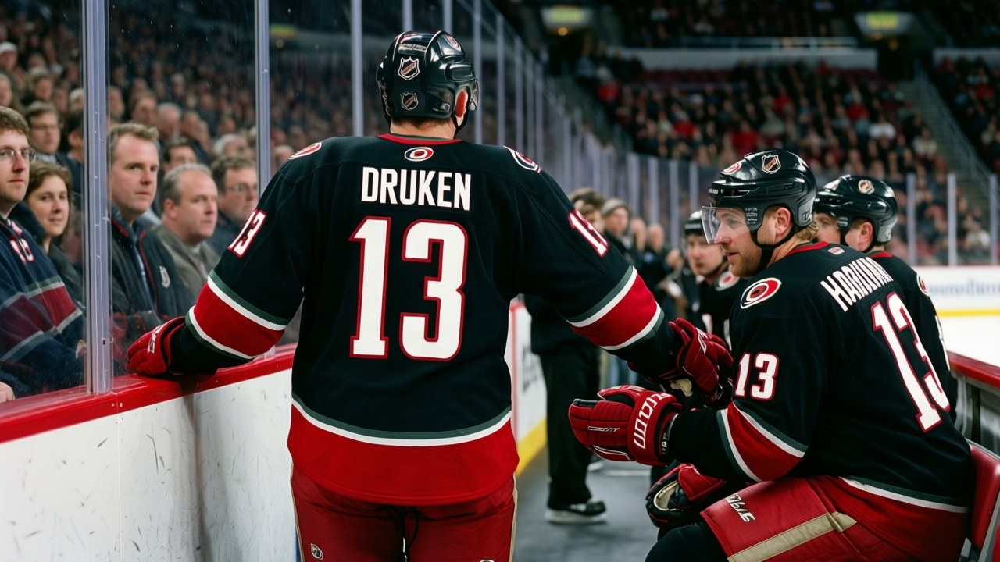

Third Time, First Winter: Harold Druken at 25
Waived twice in five weeks, buried in the minors at 24, the man with the 94 wrist is now putting up a point a night for the best team in the Southeast.
 Tomáš VránaProfile writer · The Sweater
Tomáš VránaProfile writer · The Sweater Harold Druken75 has 33 points in 35 games for
Harold Druken75 has 33 points in 35 games for  Carolina Hurricanes, which puts him sixth on a team that has lost 7 games all season and sits first in the Southeast with 49 points. He is 25. He earns $1.36M with 5 years left on his contract. A year ago he had 8 points in 35 games at 10.2 minutes a night, most of those spent in the minors, and two winters ago he was waived by Carolina, claimed by
Carolina Hurricanes, which puts him sixth on a team that has lost 7 games all season and sits first in the Southeast with 49 points. He is 25. He earns $1.36M with 5 years left on his contract. A year ago he had 8 points in 35 games at 10.2 minutes a night, most of those spent in the minors, and two winters ago he was waived by Carolina, claimed by  Toronto Maple Leafs, and waived by Toronto inside five weeks.
Toronto Maple Leafs, and waived by Toronto inside five weeks.
The shooting wrist is the thing. The Bureau's Book has it at 94. His speed is 89, his passing is 85, his deking is 84, his acceleration is 83. Those are grades that belong on a top-six center who gets power-play time and drives a line. They also belong, in his case, on a man whose endurance grade is 50 and whose fighting grade is 50. The Book calls him a player split down the middle: the hands and the feet near the top of the league, the engine near the bottom.
That combination has defined every club he has played for. He scored 58 goals and 103 points for the Plymouth Whalers in 1998-99, seventh in the OHL that year. He played for Canada at the 1999 World Juniors and won a silver medal, the same tournament where he met Roberto Luongo, the friendship that has outlasted every jersey he has worn. The  Vancouver Canucks Canucks took him 36th overall in 1997. He played 55 games for them in 2000-01, 15 goals, 30 points. Then the ankle went on November 30, 2001, and the next three winters became a loop: traded to Carolina in November 2002, waived in December 2002, claimed by Toronto, waived again, re-acquired by Carolina in January 2003, sent to the Lowell Lock Monsters in the AHL, traded back to Toronto in May 2003, nine games with the Maple Leafs in 2003-04, the rest in the minors.
Vancouver Canucks Canucks took him 36th overall in 1997. He played 55 games for them in 2000-01, 15 goals, 30 points. Then the ankle went on November 30, 2001, and the next three winters became a loop: traded to Carolina in November 2002, waived in December 2002, claimed by Toronto, waived again, re-acquired by Carolina in January 2003, sent to the Lowell Lock Monsters in the AHL, traded back to Toronto in May 2003, nine games with the Maple Leafs in 2003-04, the rest in the minors.

The minutes did the rest
Last year, 10.2 a night. This year, 18.2. When a man with a 94 wrist and 89 speed goes from 10 minutes to 18, the points multiply. The Bureau's Development Index has him at +2, meaning he is currently playing above his base grade of 77. The gap between his pace this year and his pace last year is 0.71 points a game, a difference the Index puts in words as a season of form rather than a single hot stretch.
Part of it is opportunity.  Rod Brind'Amour83, Carolina's center and its voice, has been out with a back since early December, with a return date of January 22. Druken has not been new to the lineup, the record shows him with Carolina before the season opened, but the absence of Brind'Amour has moved minutes and usage up the depth chart. He answered with 33 points. Radim Vrbata has 51.
Rod Brind'Amour83, Carolina's center and its voice, has been out with a back since early December, with a return date of January 22. Druken has not been new to the lineup, the record shows him with Carolina before the season opened, but the absence of Brind'Amour has moved minutes and usage up the depth chart. He answered with 33 points. Radim Vrbata has 51.  Jeff O'Neill85 has 49 in 29 games.
Jeff O'Neill85 has 49 in 29 games.  Sandis Ozolinsh84 has 44.
Sandis Ozolinsh84 has 44.  Petr Sykora80 and Steve Rucchin sit at 35. Druken is behind four of those five and one point behind the other. On a team leading its division, that is a regular line.
Petr Sykora80 and Steve Rucchin sit at 35. Druken is behind four of those five and one point behind the other. On a team leading its division, that is a regular line.
The recent stretch says more than the full-season number. At 24 games, Druken had 15 points. At 35, he has 33. That is 18 points over his last 11 games. The ice time kept going up, and the 94 wrist kept finding the net. The +2 holds.
| Season | GP | G | A | P | MPG |
|---|---|---|---|---|---|
| 2003-04 | 35 | 3 | 5 | 8 | 10.2 |
| 2004-05 | 35 | 11 | 22 | 33 | 18.2 |
The number above the number
The Book puts his potential at 71. He is currently graded at 77. He is above the ceiling the Bureau projected for him, which means the grades the Bureau gave him at 25 are better than what the projection line carried. That happens when a player's best attributes outpace his worst, and the coach finds the right amount of ice to hide the weakness without wasting the strength.
His contract runs 5 more years at $1.36M. In a league where the top centers clear $6M and second-line work fetches $3M and up, that number will not last if the points do. He is putting up a 0.94 rate on a team first in its division, playing 18 minutes a night at 25 with a $1.36M cap hit. Raleigh will need to decide whether the player in front of them is real enough to pay at the rate the numbers suggest.
Jeff O'Neill, the right wing with 26 goals, and Sandis Ozolinsh, the defenseman collecting 39 assists, are the engine of this team's offense. Druken is the man one line behind, producing at a rate that makes the coach wonder why it took this long. The answer is the 50, the endurance grade that told every coach before this one to keep the shifts short. When a coach gives a man with a 50 endurance 10 minutes, he is saying the body cannot take more. When a different coach gives him 18, he is saying the short shift works, the shot carries, the speed is enough for half a game instead of needing a full one.

St. John's is a long way from Raleigh. Druken left at 16 for the OHL, came back as a 36th pick, went west, came east, got sent back, got sent back again. He is 25, in Carolina for what the record counts as his third stint, and for the first time nobody has taken the ice away from him. The Index says +2. The shooting grade says 94. The endurance says 50. The 33 points are what happens when someone stops trying to fix the last one and starts using the first two.